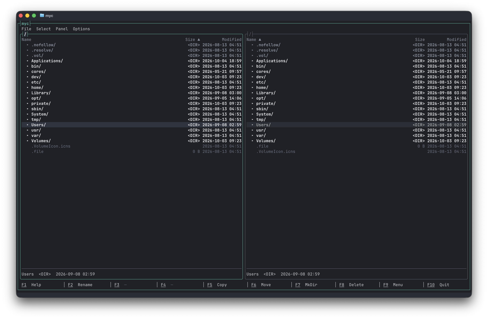

1986
Norton Commander
The original. Two panels, ten function keys, blue and yellow. F5 copied, F8 deleted, Tab changed sides. The habits are still in people’s hands.
A file manager for the terminal
myc is My Commander. It keeps the Norton Commander screen — a directory on the left, a directory on the right, and a function-key bar along the bottom — and it is simpler than Midnight Commander, on purpose. The command line is crowded again. myc is the companion that just moves the files.

Norton Commander made the job obvious in 1986: look at both places, mark what you need, and act. That picture has not been improved on. Midnight Commander carried it forward and kept adding. myc stops at the picture.
1986
The original. Two panels, ten function keys, blue and yellow. F5 copied, F8 deleted, Tab changed sides. The habits are still in people’s hands.
1994
The portable descendant, and a large one: a shell, a viewer, an editor, archives, FTP, and a user menu you can script. Capable, and a lot to carry.
Today
The same two panels and the same keys. Four short menus — File, Select, Panel, Options — and dialogs that say what they will do. No shell inside the file manager.
F5 still copies. F6 moves. F8 deletes. Tab still changes sides.
The point of a smaller commander is that the everyday moves stay fast, and the dangerous ones stay obvious. These are the ones myc is built around.
Copy and move go to the other panel, so you are looking at the destination when you confirm. Alt+= shows the current folder on the other side. Ctrl+U swaps the two. The active panel wears the brighter border.
Space marks the row under the cursor. + selects a pattern such as *.jpg and counts the matches as you type; − clears that pattern. With nothing marked, the command uses the cursor.
F8 moves the selection to the macOS Trash. Shift+F8 deletes permanently, and it asks more firmly. Esc leaves a dialog without taking the action. If a copy or a delete is already running, Esc cancels it.
Graphite is the default: dark, neutral, teal only where it means something. Paper is the light theme. Set NO_COLOR and myc keeps the terminal’s own colours — marks stay a glyph, not only a tint. Quit, and the screen is put back.
The command line came back
Claude Code, Codex, Pi, and GitHub Copilot have made the terminal a place people stay. They write, they run, they range across a repository. Comparing two directories, and moving a marked set of files, is still a file manager’s job.
myc is the companion for that moment. Open it in the same window, do the file work, and leave with F10 or Ctrl+Q. The agent keeps the session. You keep the Norton keys.
alongside myc
F9 opens the menu, and every item shows its shortcut, so the menu is also the cheat sheet. There is no separate Left and Right menu. Panel means the panel you are in.
F3 and F4 stay on the bar, dimmed, until a viewer and an editor exist. The row does not grow a hole in the meantime. On a Mac, Esc then a digit does the same as the function key.
The first launch opens the current directory on the left and your home folder on the right. Later launches reopen the folders you left. Config lives in ~/.config/myc/.
$ dotnet run --project src/Myc.App